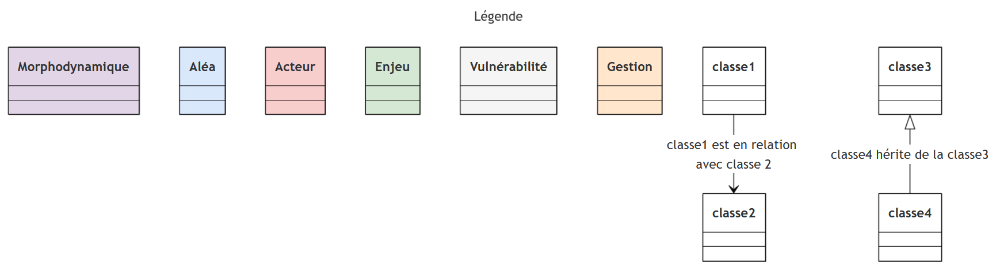

Conclusion : caractéristiques clefs du territoire montagneux, les aléas les plus présents sont... voici notre choix d'axe d'analyse...
Carte zoom de la couverture en DICRIMs par rapport au nombre de catnat par communes

Les aléas des paysages montagnards en cascade : quel risque pour les communes de la Haute-Savoie ?
---
title:
---
classDiagram
%%{
init: {
'theme': 'base',
'themeVariables': {
'primaryBorderColor': '#000000',
'mainBkg': '#ffffff'
}
}
}%%
namespace Risque74 {
class Risque:::alea{
+ type : string
+ denomination : text
+ Démarre()
+ S'étend()
+ PrendFin()
}
class Morphodynamique:::morphodynamique
class Aléa:::alea
class AléaOrigineAnthropique:::alea
class AléaIndustriel:::alea
class AléaSanitaire:::alea
class Pollution:::alea
class AléaOrigineNaturelle:::alea
class AléaGéomorphologique:::alea
class MouvementTerrain:::alea
class GlaciairePeriglaciaire:::alea
class Avalanche:::alea
class AléaGéodynamique:::alea
class Séisme:::alea
class AléaHydroclimatiqueMétéorologique:::alea
class Inondation:::alea
class Humain:::alea
class Enjeu:::enjeu
class EspaceNaturel:::enjeu
class VoieCommunication:::enjeu
class Population:::enjeu
class Infrastructure:::enjeu
class Gestion:::gestion
class Prévention:::gestion
class GestionCrise:::gestion
class GestionPostCrise:::gestion
class Résilience:::gestion
class Acteur:::acteur
class Vulnérabilité:::vulnerabilite
class VulnérabilitéPopulation:::vulnerabilite
}
Morphodynamique --> Aléa : prédispose à
Aléa <|-- AléaOrigineAnthropique
Aléa <|-- AléaOrigineNaturelle
AléaOrigineAnthropique <|-- AléaIndustriel
AléaOrigineAnthropique <|-- AléaSanitaire
AléaOrigineNaturelle <|-- AléaGéomorphologique
AléaOrigineNaturelle <|-- AléaGéodynamique
AléaOrigineNaturelle <|-- AléaHydroclimatiqueMétéorologique
AléaIndustriel --> Pollution : peut causer
AléaSanitaire <|-- Pollution
AléaGéomorphologique <|-- MouvementTerrain
MouvementTerrain --> AléaIndustriel : peut entraîner
MouvementTerrain --> Morphodynamique : remodèle
AléaGéomorphologique <|-- GlaciairePeriglaciaire
AléaGéomorphologique <|-- Avalanche
GlaciairePeriglaciaire --> Avalanche : peut déclencher
Humain --> Avalanche : peut déclencher
AléaOrigineNaturelle --> Avalanche : peut déclencher
AléaHydroclimatiqueMétéorologique --> Avalanche : peut déclencher
AléaGéodynamique <|-- Séisme
Séisme --> AléaGéomorphologique : peut déclencher
AléaHydroclimatiqueMétéorologique <|-- Inondation
Inondation --> AléaHydroclimatiqueMétéorologique : entraine (facteur précipitations intenses)
Inondation --> Pollution : peut causer
class Enjeu{
+ id :
+ type :
+ localisation :
}
class EspaceNaturel{
+ type: alpage d'altitude,
lit des rivières
}
class VoieCommunication{
+ massif : massifs du Mont-Blanc,
Aravis, Haut-Giffre,
Aiguilles-Rouges et Chablais
}
class Infrastructure{
+ lieu: zone urbanisée, plaine, station de ski
+ type : habitation, terrain de sport de montagne, zone d'exploitation forestière
+ nombre
+ hors piste : boolean
+ sport
}
class Population{
+ nbre_personnes : int
+ blessés
+ décès
+ déplacés
+ sans domicile
+ isolés
}
Enjeu <|-- EspaceNaturel
Enjeu <|-- VoieCommunication
Enjeu <|-- Infrastructure
Enjeu <|-- Population
Morphodynamique --> Enjeu : intervient dans l'exposition de
Séisme --> Enjeu : fragilise/détruit
Inondation --> Enjeu : fragilise/détruit
Avalanche --> Enjeu : fragilise/détruit
class Gestion{
+ id:
+ type:
+ dénomination
}
Gestion <|-- Prévention
Gestion <|-- GestionCrise
Gestion <|-- GestionPostCrise
Gestion <|-- Résilience
Prévention --> Vulnérabilité : vise à réduire
class Acteur{
+ id :
+ nom : string
+ type
+ rôle
}
Acteur --> Gestion : intervient dans
Acteur --> Vulnérabilité : réduit
Vulnérabilité <|-- VulnérabilitéPopulation
Vulnérabilité --> Enjeu : est une propriété de
Morphodynamique --> Vulnérabilité : peut accentuer
class Morphodynamique{
+ site géographique
+ pente :
+ manteau neigeux
+ bassin glaciaire : boolean
+ type : plaine, montagne,
haute montagne, cours d'eau et lacs,
débit montagnard, réseau hydrographique
}
class Aléa{
+ localisation :
+ date :
}
class AléaIndustriel{
+ type : usine chimique
}
class MouvementTerrain{
+ origine : naturelle, anthropique
+ Variabilité du volume (qqls m3 à qqls millions de m3)
+ Variabilité de la vitesse
+ type_mouvement : lents et continus, rapides et discontinus
+ degats : éboulements, chutes de blocs, affaissements de sols,
coulées boueuses et torrentielles, glissements,
retrait-gonflement d'argile
}
class Avalanche{
+ vitesse: km/h
+ masse: m³
+ type: enum type_avalanche
+ neige: enum nature_neige
}
class Séisme{
+ hypocentre : localisation
+ épicentre : localisation
+ magnitude : échelle de Richter
+ intensité : échelle MSK
+ fréquence vibrations : int
+ durée vibrations : int
+ faille provoquée : verticale ou inclinée;
propagation en surface ou non
}
class Inondation{
+ type: inondations de plaine,
ruissellement pluvial, crues,
remontée de nappe phréatique
}
classDef morphodynamique fill:#e1d5e7;
classDef alea fill:#dae8fc;
classDef acteur fill:#f8cecc;
classDef enjeu fill:#d5e8d4;
classDef vulnerabilite fill:#f5f5f5;
classDef gestion fill:#ffe6cc;

Le DDRM du département de la Haute-Savoie (74) fait état des 17 aléas qui impactent le territoire. Dans ce modèle conceptuel de données, nous avons fait le choix de ne détailler (avec leurs attributs) que 6 aléas clés. Ils nous permettent de structurer notre travail sur une partie du système.
Malgré nous, les enjeux sont au centre ce qui les situent au coeur de la notion du risque en Haute-Savoie. Comme expliqué précédemment, ce MCD ne représente qu'une partie des aléas concernant le territoire par conséquent ce modèle ne représente pas la totalité du système. Afin d'avoir une approche systémique complète, il devrait être complété afin de modéliser les intéractions avec les autres aléas.
De plus, concernant cette fois-ci la qualité du travail fournit, sfin d'être exploitable dans un contexte professionnel ou de recherche par exemple, un travail afin d'améliorer la généralisation des attributs et supprimer définitiement les instances de classes serait intéressant à mener.
Carte situant le département en France et comparaison de l'exposition aux aléas en comparaison avec le ratio de couverture en DICRIM de chaque département
Conclusion : caractéristiques clefs du territoire montagneux, les aléas les plus présents sont... voici notre choix d'axe d'analyse...
+ ajouter les catégorisations de catnat